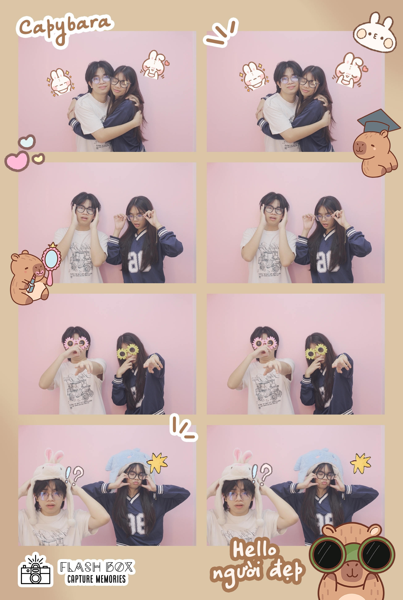
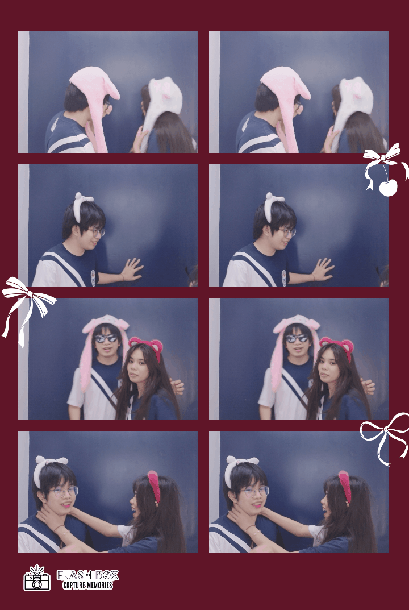
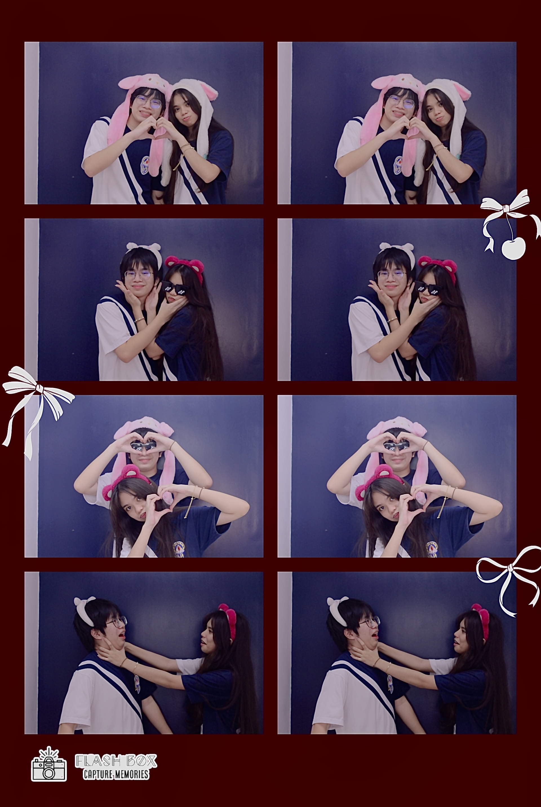

PLS MORE PHOTO BOOTH! 📸




Happy Birthday 🥹
I made this little website just for you.
Please explore everything slowly.



1. Everything about him is just so unique — he has me utterly captivated.
2. How he easily make me smile.
3. If im sad or upset, he will really show that he will be there for me — also cheers me up.
4. He shows how genuine and sincere his love with me.
5. Tiny gestures.
6. Takes care of me even when were long distanced.
7. Clinginess.
8. Straight priorities.
9. Checks up on me.
10. Fear to God.
11. Funny.
12. Very respectful.
13. Teases
14. His silly actings.
15. BAKAAAAA.
16. Bullying me in school.
17. Sudden romantic gestures.
18. His willingness.
19. Makes me feel confident.
20. Reassures me alot.
21. I can trust him alot, even if I tell the most dumbest secret — he would not judge and laugh it off w me.
22. Makes me feel so safe.
23. How he loves all my insecurities.
24. How he makes me feel like a princess.
25. I feel at ease being with him.
26. His warmth.
27. Hes never annoyed at me— even when I try to do the most diabolical shit ever... and questionable...
28. His lovely smile.
29. How he looks at me.
30. How he is not afraid to correct me.
31. How he brag or talk to his friends about me.
32. His hardwork
33. His hair.
34. His glasses.
35. His cheeks.
36. His lips.
37. His nose.
38. His eyes.
39. His eyebrows.
40. All in physical appearance, he is perfect and handsome and ADORABLE just the way I love it.
41. Family oriented.
42. How he tries his best to make me happy always.
43. Knows really well how to treat me right.
44. Keep his pinky promises.
45. Makes my life even more colorful, lively, exciting, romantic, ...
46. He has everything I want and need.
47. Letting me be part of his life... His future...
48. Makes me feel Important.
49. How patient he is with me.
50. Never fail to impress me or leave me flabbergasted— TO ANYTHING it can be random sht.
51. Calm.
52. Communicates with me thoroughly.
53. Reliable.
54. He never makes me feel little about myself.
55. He shows how committed he is with me.
56. He shows me how a man should treat a lady.
57. Listens to my yap.
58. He has that goofy and funny yet calm and relaxing character, which is unique for me.
59. How vulnerable he can be with me.
60. His baby side.
61. He never makes me feel insecure.
62. How he talks about wanting to love me at the fullest.
63. How he makes little plans or story scenarios for our future.
64. He knows when to be serious and goofy.
65. How he tampo.
66. His laugh and giggles.
67. When he removes his glasses...
68. His presence.
69. Helps me how to handle things.
70. How he says my name 'Angel'.
71. Takes me seriously.
72. Randomly spawning into my life, when i needed the most.
73. Bringing back my genuine self and smiles.
74. His style.
75. How he makes my inner child smile and giggle.
76. How he makes me feel that i would heal easily just by being with him, because of how patient and how he treats me right.
77. Plays with me.
78. Watches with me.
79. How I can just turn off my brain with him.
80. How he tries to protect me.
81. How he makes me feel seen.
82. HAHAHAHAHAHA sukuna
83. He is not afraid to be who he is, if he is then I will reassure him that just be yourself with me.
84. He tries his best to understand me.
85. I find peace just by seeing him and/or being with him.
86. He is there for everybody and helps everybody.
87. Very sweet.
88. His cute duck plushies.
89. Kind gorgeous and genuine soul.
90. Disciplined.
91. How happy and proud he is with me, with my tiniest achievements.
92. Never gives up.
93. How he gives me life scenarios to make me understand a problem.
94. How he love cats.
95. How he wanna randomly hold my hand.
96. How excited he is going out on a date.
97. How appreciative he is over little things.
98. His little glances— thinking I wouldn't notice or catch him.
99. How he makes me feel the prettiest girl.
100. There’s something about the way he makes me feel, like I can achieve the impossible — something the old me would have never dared to try.
101. Whenever (we) playing with friends, he still ask me to call and talk to me.
102. How he wants to be together with anything— like partner or groupmates in academic sht.
103. He is Independent.
104. How he motivates me.
105. Sweetest heart I have ever seen.
106. Everything seems so fun with him.
107. Strong.
108. Inspired me to be better and lively.
109. Loving me unconditionally.
110. Changes my point of view abt everything i find annoying before.
111. He tries to solve my silly problems.
112. Loyalty.
113. Always thinks about me.
114. Never betrays anyone.
115. Making normal or common actions feel more genuine and special.
116. he still tries to impress and give me butterflies even when were like together.
117. Support.
118. making me feel worthy.
119. When he calls me 'babiiii'.
120. Cute/baby voice.
121. Trying to act tough when he's actually a big baby.
122. Gentleman.
123. Adventurous
124. Sensitive and picks the right words
125. Always make my heart skip a beat in the most unexpected romantic moments.
126. Him kissing my forehead.
127. How he holds me when kissing.
128. How he makes me miss him...
129. The way how he do things perfectly and impressively in my eyes, No matter what the circumstances is.
and on going...